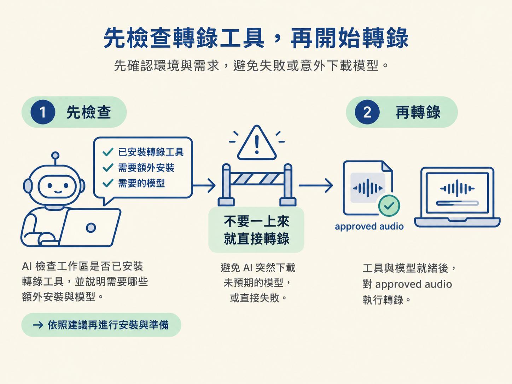
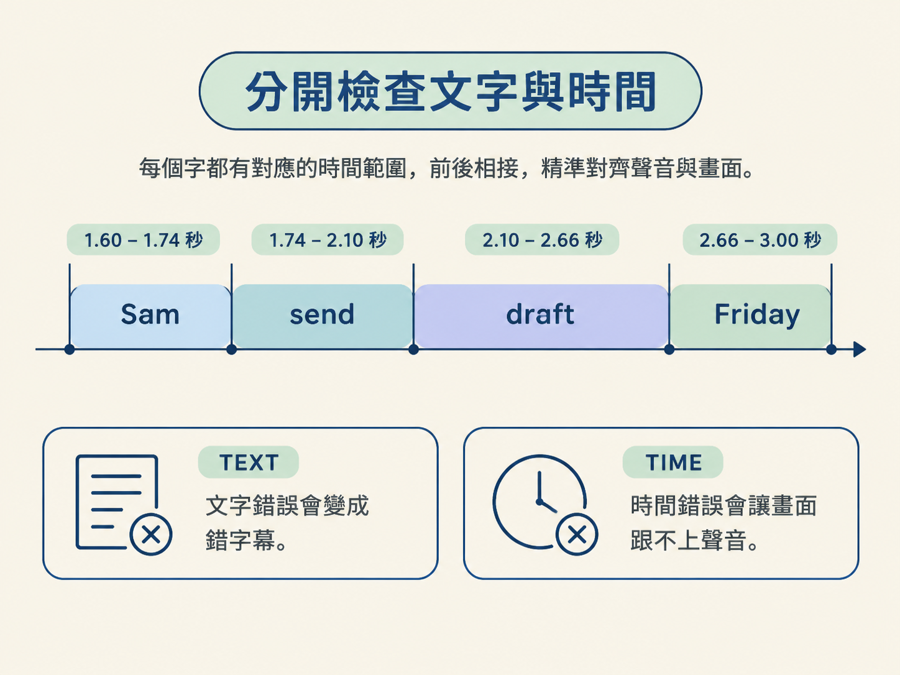

這一步位在「確認錄音」之後、「製作分鏡」之前。你要把上一課選定的錄音，轉成兩份可以檢查的成果：
開始前，先確認你知道哪一段是上一課核准使用的錄音，也就是 approved audio，不要拿草稿檔來跑。這一步由 AI 協助檢查與執行，你則負責確認工具設定，並親耳檢查文字和時間是否正確。
不要一上來就直接叫 AI 轉錄。轉錄工具是選配功能，不一定已經隨工作區安裝完成。課程使用的準備版工作區在靜默設定時，沒有安裝這個可選部分。
如果少了這個步驟，AI 可能會直接失敗，或突然開始下載你沒有預期的模型。正確順序是：先請 AI 檢查並說明，再讓它執行轉錄。

請 AI 檢查轉錄需求。請它依照工作區的轉錄說明操作，並在安裝任何額外工具或下載模型前，先告訴你需要做什麼。
如果需要選模型，模型不是越大越好。請 AI 依照這臺電腦的能力選擇合適的版本，避免下載太久，或安裝後根本跑不動。
對 approved audio 執行轉錄。確認工具與模型都準備好後，再對上一課選定的那段錄音執行轉錄指令。不要使用草稿錄音。
完成後，預期會看到兩個互相搭配的檔案：一份逐字稿，以及一份記錄時間碼的檔案。
打開檔案並實際抽查。不要因為工具成功產出檔案，就直接把結果當成正確答案。請播放錄音，挑出關鍵句親耳比對；工具標示為「不確定」的地方，也要順手檢查。
先找出旁白念到這句話的片段：
Sam will send the draft on Friday.
這句話很適合拿來抽查，因為裡面有兩種容易出錯的資訊：人名 Sam，以及時間 Friday。請播放這一小段錄音，將耳朵聽到的內容，和逐字稿上寫的內容對照。
如果 AI 提出修正，請先回到實際錄音再判斷。AI 可以幫你找出可疑的位置，但最後是否修正，必須由你聽過錄音後決定。
同一句話裡，文字錯誤和時間錯誤會造成不同問題。請分成兩個角度檢查：
| 檢查面向 | 要問的問題 | 錯了會怎樣 |
|---|---|---|
| 文字（TEXT） | 名字和事實對不對？ | 名字寫錯，就會變成錯誤字幕，觀眾也可能記住錯的資訊。 |
| 時間（TIME） | 每個字是否落在正確的秒數？ | 時間偏掉，強調的重點可能太早出現，畫面就會跟不上聲音。 |
時間檔中的每個字，會記錄它的開始時間和結束時間。以下是 Sam、send、draft、Friday 的範例：
{ "text": "Sam", "start": 1.60, "end": 1.74 }
{ "text": "send", "start": 1.74, "end": 2.10 }
{ "text": "draft", "start": 2.10, "end": 2.66 }
{ "text": "Friday","start": 2.66, "end": 3.00 }這些數字不是手動估算的約略值，而是工具記錄的時間範圍。例如，Sam 從 1.60 秒開始，到 1.74 秒結束。

抽查時不用逐行核對所有文字。先挑 Sam、Friday 這類「錯了你會在意」的關鍵字，播放一次、對照一次即可。若工具標出其他不確定的位置，再用同樣方法檢查。
完成這一步後，工作區裡應該有：
這些檔案提供的是錄音中的事實：錄音說了什麼，以及在第幾秒說出來。它們還沒有決定畫面要怎麼呈現；畫面的安排會留到下一節處理。
轉錄工具是選配功能，所以先請 AI 檢查工具、額外安裝項目與模型，再對上一課選定的錄音執行轉錄。完成後會得到逐字稿和時間檔。抽查時分成兩件事：文字是否正確，避免名字變成錯誤字幕；時間是否準確，避免畫面比聲音提早出現。AI 可以提出修正，但要由你回聽實際錄音後決定是否採用。
現在你手上有了一份可信的逐字稿和時間檔。下一節會把這些材料交給分鏡規劃，讓每個 spoken phrase 都對應到一個明確的畫面工作。